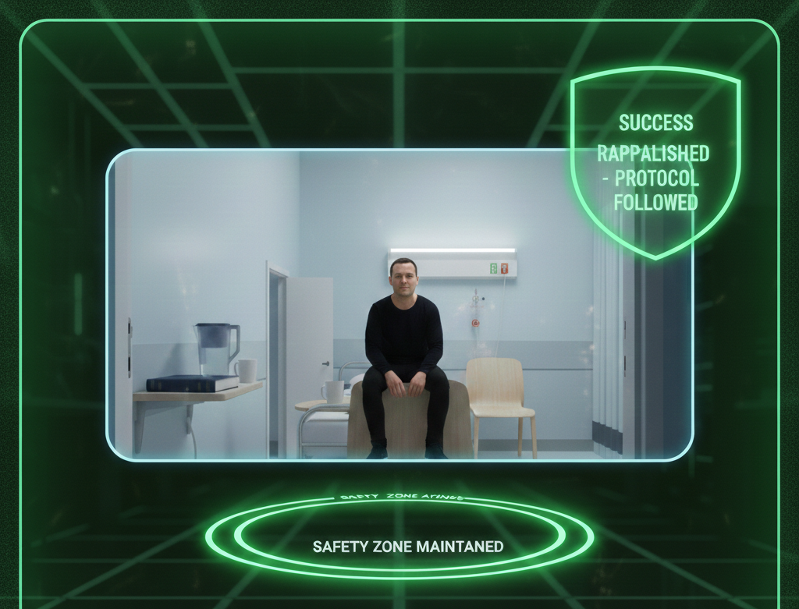

De-Escalation Lab
Scenario roleplay with AI-guided decision trees
NyxCodex gives psychiatric healthcare teams a place to rehearse the hard moments before they happen on shift. AI coaching, role-based drills, manager visibility, and clinical debriefing live in one platform built for behavioral health operations.
“This feels less like annual compliance and more like a rehearsal room for real clinical pressure.”Designed for psychiatric hospitals, inpatient teams, and de-escalation readiness programs
Real examples from the training experience — the scenario lab, patient observation coaching, and de-escalation outcome screens.


NyxCodex combines structured education, scenario practice, AI debriefing, and leadership oversight into one experience. That means fewer disconnected tools, fewer manual follow-ups, and more reps where staff actually need them.
Practice autism, PTSD, bipolar, psychosis, borderline traits, and medication refusal scenarios with graded de-escalation scoring.
Staff get real-time coaching, better phrasing, and post-incident debriefs without waiting for a live educator to review every attempt.
XP, lab credits, mastery badges, completion data, and assignment tracking help teams see who is building confidence and who needs support.
“If your staff can only read about de-escalation, they still have to improvise under pressure. If they can rehearse it, they show up differently.”NyxCodex positioning
The product is built to feel operationally light. Staff move through structured content, jump into high-pressure scenario labs, and leave with clearer language for the next real interaction.
Use structured modules to standardize your de-escalation language, expectations, and annual readiness workflow.
Run scenario labs, daily drills, and diagnosis-specific practice loops so staff can build calm before the floor gets loud.
Managers assign follow-up scenarios, review progress, and use debrief outputs to reinforce stronger clinical communication.
Different users need different value. NyxCodex gives each role a reason to come back instead of treating training as a one-time event.
Short drills, guided responses, scenario scoring, and debrief coaching help staff rehearse before the next difficult patient interaction.
Use scenario assignments, due dates, and readiness views to direct coaching where it is actually needed.
Track certification readiness, leaderboard engagement, and team-wide challenge progress without leaving the platform.
Training leadership should not need three dashboards and a spreadsheet to understand who is ready. NyxCodex keeps the operational layer connected to the learning experience.
Assign scenarios, extend due dates, send nudges, and track who has completed specific follow-up work after a weak lab performance.
Use daily streaks, team challenges, push campaigns, lab credits, and achievement badges to keep the platform active beyond annual compliance windows.
No. It covers structured annual curriculum, but the stronger value is ongoing rehearsal through drills, labs, and follow-up coaching.
Yes. The interface is designed for mobile-first access so staff can complete quick reps and assigned work between real unit demands.
Yes. Scenario history, mastery counts, due dates, and assignment tools support directed coaching rather than broad reminders.
Most LMS tools deliver information. NyxCodex is built around rehearsal, response quality, clinical debriefing, and operational readiness.
Give your staff a place to rehearse the hard moments before they land on the unit. Set up your organization's training workspace in minutes.